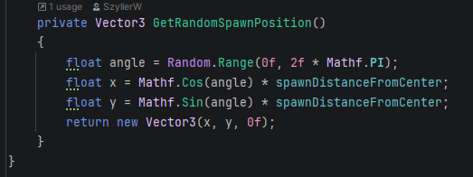
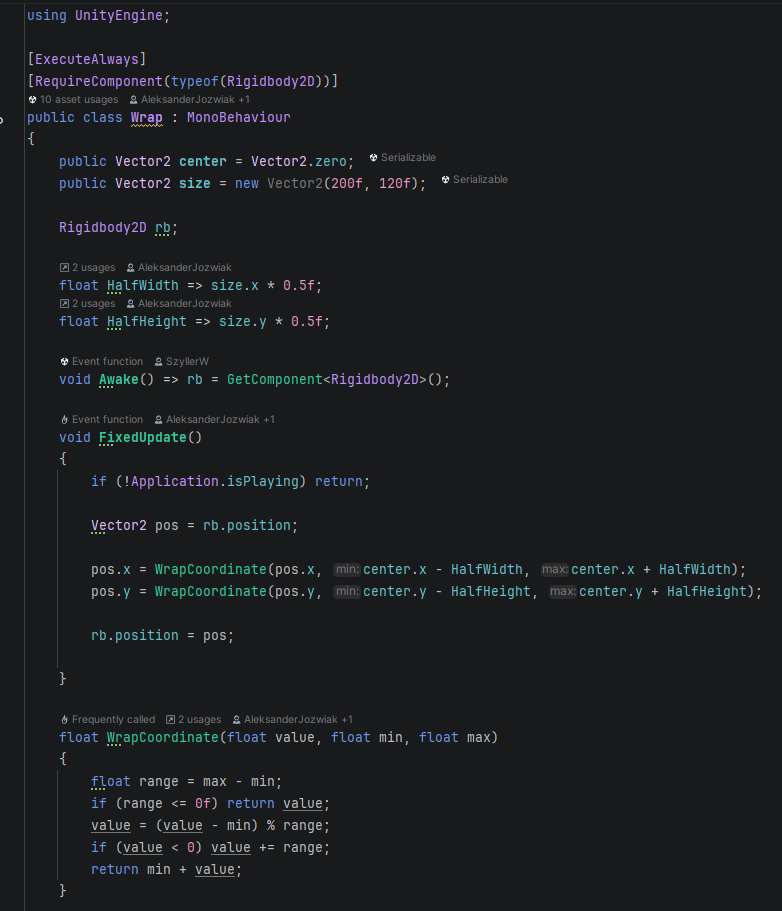

Spacetaker is a multiplayer prototype focused on cooperative gameplay, shared objectives, and synchronized game states. Players must coordinate actions, manage space-based threats, and react to dynamic events together.
I worked on core gameplay programming, implementing player systems, interaction logic, win/lose conditions, and foundational multiplayer-ready mechanics. The project was designed as a flexible prototype for further expansion.

